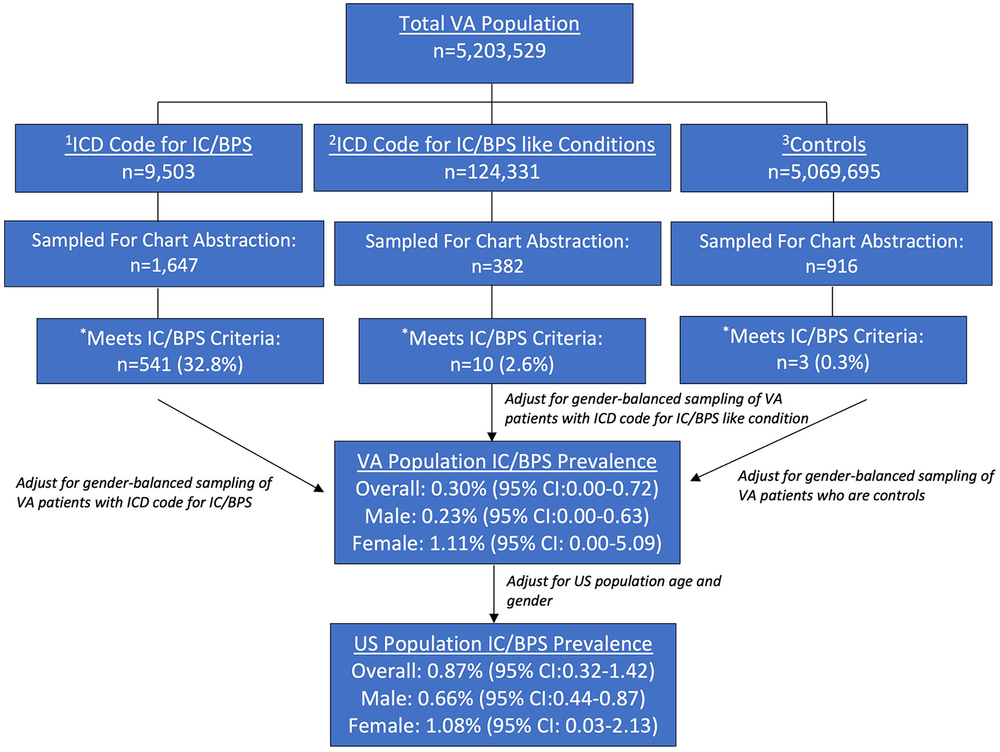

Não há comunicação anormal: a bexiga dói mesmo sem buraco.
Página 6 · Parte 2 · Síndrome da bexiga dolorosa
O nome, a definição que se memoriza e quem adoece
Cerca de 300 a cada 100.000 mulheres. Entre cinco e dez mulheres para cada homem. E parentes de primeiro grau de quem tem a doença carregam prevalência 17 vezes maior. Este é o retrato de quem adoece — e o nome pelo qual a prova chama isso mudou.
Quem adoece
A síndrome da bexiga dolorosa é muito mais comum na mulher do que no homem, e a maioria dos casos se situa entre 40 e 60 anos. A razão mulher:homem descrita na literatura vai de cerca de 5:1 a 10:1, e a prevalência estimada gira em torno de 300 casos por 100.000 mulheres. Dentro dessa faixa, o pico está na quarta e quinta décadas — ou seja, o intervalo de 40 a 60 anos contém o pico e não induz erro. Dois dados a mais valem mais que a faixa etária para fixar o perfil: as estimativas de prevalência por questionário variam absurdamente (de 0,57% a 12,6%), o que já denuncia o quanto o diagnóstico é difícil; e parentes de primeiro grau de mulheres afetadas têm prevalência 17 vezes maior, o que sugere suscetibilidade genética. Do ponto de vista de onde a entidade mora, ela está dentro dos espectros clínicos causadores de dor pélvica crônica — e é essa vizinhança que explica por que ela costuma chegar ao consultório depois de anos de peregrinação.
O nome que a prova usa mudou
A ESSIC preconiza que se use preferencialmente o termo "síndrome da bexiga dolorosa", e não "cistite intersticial". Este é o item que mais se enfatiza no tema, e é armadilha pura de terminologia — vale saber inclusive por que a troca aconteceu: "cistite intersticial" implica reação inflamatória com solução de continuidade na parede vesical, e essa não é a apresentação mais comum da doença; o novo nome, além de mais fiel, encaixa a entidade na taxonomia da dor, que é onde ela pertence. Um cuidado prático, porém: o termo antigo não desapareceu. A sociedade americana de urologia usa a forma híbrida "cistite intersticial / síndrome da bexiga dolorosa" (IC/BPS); a europeia reserva "cistite intersticial" para o subgrupo com inflamação crônica submucosa comprovada; e no Brasil circulam síndrome da bexiga dolorosa (SBD) e síndrome da dor vesical (SDV), com a urologia nacional usando CI/SDV. Ou seja: "síndrome da bexiga dolorosa (antiga cistite intersticial)" é a forma segura de nomear — o termo preferido na frente, o histórico entre parênteses, porque é por ele que o assunto continua indexado.
Por que as definições variam — e por que isso é dado de prova
As definições da síndrome da bexiga dolorosa variam de acordo com a fonte — e isso, por si só, é dado de prova. Não é curiosidade acadêmica: é a história do problema. A definição do National Institutes of Health descreve sintomas vesicais dolorosos na ausência de infecções ou de outras condições clínicas que sejam identificáveis. Essa formulação nasceu de critérios criados nos anos 1980 para pesquisa, e foi justamente aí que a coisa desandou: aplicados à clínica, esses critérios eram tão restritivos que deixavam de diagnosticar boa parte das pacientes que tinham a doença. A definição seguinte, da sociedade internacional de continência, ainda diagnosticava apenas cerca de 60 a 66% dos casos. É essa falha em série que produz a ESSIC. E é por isso que a definição da ESSIC é mais sofisticada — e é a que se recomenda memorizar. Não se trata de preferência: em 2010, o comitê internacional dedicado ao tema votou a definição da ESSIC como a mais apropriada. Quando a fonte diz "memorize esta", há uma decisão de comitê por trás.
A definição da ESSIC, elemento a elemento
São seis elementos, e a banca cobra por eles. Elemento 1 — presença de dor pélvica crônica. Elemento 2 — com duração maior que seis meses. Elemento 3 — relacionada ao trato urinário, ou seja, identificada pela paciente como vindo da bexiga. Elemento 4 — a assinatura: dor que piora com o enchimento vesical, com a repleção, e melhora com o esvaziamento. Se houver um único elemento para levar de todo o raciocínio, é este: mais de 90% das pacientes relatam esse comportamento, e é ele — não a localização da dor — que sustenta a suspeita. Elemento 5 — acompanhada de pelo menos mais um sintoma urinário: urgência ou frequência. Elemento 6 — é necessário excluir outras afecções.
Há um detalhe de duração que é ouro de banca e custa uma linha: a ESSIC exige mais de seis MESES; a sociedade americana de urologia usa mais de seis SEMANAS. As duas definições são legítimas e coexistem na literatura — a americana é deliberadamente mais permissiva para não retardar tratamento. Quem sabe que 6 semanas × 6 meses é diferença de fonte, e não erro de alguém, separa-se de quem decorou um número solto.
Um diagnóstico de exclusão
Do elemento 6 decorre a natureza da entidade: é um diagnóstico de exclusão. Não existe exame que o confirme; o que existe é uma lista de coisas que precisam ser afastadas antes de o nome ser dado. Entre o que precisa ser excluído: litíase renal; endometriose; infecção do trato urinário. E é justamente aí que mora o problema: o grande desafio é o diagnóstico — são sintomas longevos, arrastados por anos, e é preciso excluir todas as outras causas, o que muitas vezes é um desafio real para o clínico. Uma mulher com dor pélvica crônica costuma passar por urologista, ginecologista, gastroenterologista e às vezes por cirurgia, antes de alguém perguntar se a dor piora quando a bexiga enche.
A semente do divisor: urgência não separa nada
Um alerta que precisa entrar cedo: urgência e frequência aparecem também na bexiga hiperativa ↗A7. Elas não são discriminadores. O que separa as duas entidades é a dor que piora ao encher e alivia ao urinar — e, dito com mais precisão, o motivo pelo qual a paciente vai ao banheiro: na bexiga dolorosa, ela urina para aliviar a dor; na hiperatividade do detrusor, ela urina para não perder urina ↗A7. Duas perguntas de consultório com a mesma resposta aparente ("vou muito ao banheiro") e motivações opostas. O contraste completo fica adiante, quando a clínica estiver montada.
Tabela comparativa — as três definições
| NIH/NIDDK | ESSIC — memorize esta | AUA | |
|---|---|---|---|
| Enunciado | sintomas vesicais dolorosos na ausência de infecções ou de outras condições clínicas identificáveis | dor pélvica crônica relacionada ao trato urinário, que piora com o enchimento e melhora com o esvaziamento, acompanhada de ≥1 sintoma urinário (urgência ou frequência), excluídas outras afecções | sensação desagradável (dor, pressão, desconforto) percebida como relacionada à bexiga, com sintomas do trato urinário inferior, na ausência de infecção ou outras causas identificáveis |
| Duração exigida | não especifica | > 6 meses | > 6 semanas |
| Comportamento da dor | não especifica | piora ao encher · melhora ao esvaziar | não especifica no enunciado |
| Sintoma acompanhante | não exige | ≥ 1: urgência OU frequência | sintomas do trato urinário inferior |
| Exclusão | ausência de infecção/outras condições | obrigatória — litíase renal · endometriose · infecção do trato urinário | ausência de infecção/outras causas |
Selo âmbar acima da tabela: nome preferido pela ESSIC = síndrome da bexiga dolorosa (não "cistite intersticial"). Selo âmbar na coluna ESSIC: é esta que se memoriza — votada como a mais apropriada por comitê internacional em 2010.

Após revisão de prontuários e padronização por idade e sexo, a prevalência nacional estimada de IC/BPS foi 0,87%: 1,08% nas mulheres e 0,66% nos homens.
O painel parte de 5.203.529 usuários da VHA e separa códigos de IC/BPS, condições semelhantes e controles. A revisão individual confirmou IC/BPS em 541/1.647 prontuários codificados, 10/382 condições semelhantes e 3/916 controles. Após padronização, a estimativa nacional foi 0,87%, com razão mulher:homem próxima de 1,6:1.
A Tabela 1 da mesma publicação acrescenta os estratos etários. Pelos critérios estritos da VHA, as taxas por 100 homens foram 1,64 (<40), 0,03 (40–49), 0,02 (50–59), 0,07 (60–69) e 0,05 (≥70); nas mulheres, 1,62, 0,89, 1,43, 0,36 e 0,13, respectivamente. Esses números são específicos da população de veteranos e têm intervalos de confiança amplos.
O ganho didático está justamente na divergência: esta estimativa confirmada por prontuário é menos feminina que a razão clássica de 5–10:1 e muito menor que levantamentos baseados apenas em sintomas. Portanto, não substitui o perfil clássico; demonstra como população, definição e método alteram a epidemiologia.
Anger JT et al. National prevalence of IC/BPS in women and men utilizing Veterans Health Administration data. Frontiers in Pain Research. 2022;3:925834, Figura 1 e Tabela 1. CC BY 4.0. DOI 10.3389/fpain.2022.925834. Adaptado apenas por redimensionamento/recorte de borda; acesso em 28/07/2026.
Quiz — fixação
Sobre a nomenclatura e a definição da síndrome da bexiga dolorosa, é correto afirmar:
- Gabarito B. A ESSIC propôs abandonar "cistite intersticial" porque o termo pressupõe inflamação com solução de continuidade da parede — que não é a apresentação mais comum — e sua definição reúne dor pélvica crônica > 6 meses, relacionada ao trato urinário, que piora ao encher e melhora ao esvaziar, com ≥1 sintoma urinário e exclusão de outras afecções.
- (A) inverte exatamente o item mais cobrado do tema.
- (C) erra duas vezes: os critérios do NIH nasceram para pesquisa e eram restritivos demais, deixando de diagnosticar boa parte das pacientes — o oposto de abrangentes.
- (D) generaliza indevidamente: 6 semanas é o critério da AUA; a ESSIC exige 6 meses, e o NIH não especifica duração.
- Por que cair na (D): o candidato guarda "6 semanas" como um número isolado do tema e o aplica a qualquer enunciado, sem perceber que duração aqui é atributo da fonte — e é exatamente esse par que uma questão bem-feita usa para separar quem sabe de onde veio o critério.
Mulher de 48 anos com dor suprapúbica há 2 anos, que piora à medida que a bexiga enche e melhora após urinar, associada a urgência e frequência. Urinocultura negativa, sem litíase, sem endometriose. A afirmação correta é:
- Gabarito B. A assinatura é o comportamento da dor em relação ao volume — piora ao encher, alivia ao esvaziar —, relatada por mais de 90% das pacientes; e o diagnóstico é de exclusão, firmado depois de afastadas litíase, endometriose e infecção, exatamente como o caso descreve.
- (A) cai na armadilha central: urgência não separa as duas entidades — ela ocorre em mais de 80% das pacientes com bexiga dolorosa; o que separa é o motivo da micção (aliviar a dor × evitar a perda).
- (C) inverte o papel da biópsia: não existe achado histológico específico da doença, e a biópsia serve para excluir outras condições, não para confirmar esta.
- (D) inverte a lógica da definição: a ausência de infecção é pré-requisito do diagnóstico, não motivo para descartá-lo.
- Por que cair na (A): urgência e frequência são as palavras que o cérebro associa a "bexiga hiperativa" desde o primeiro contato com o tema, e o candidato ancora nelas em vez de ancorar no dado que discrimina.
Falta a pergunta que a definição não responde: por que uma bexiga sem infecção, sem pedra e sem tumor passa a doer quando enche.